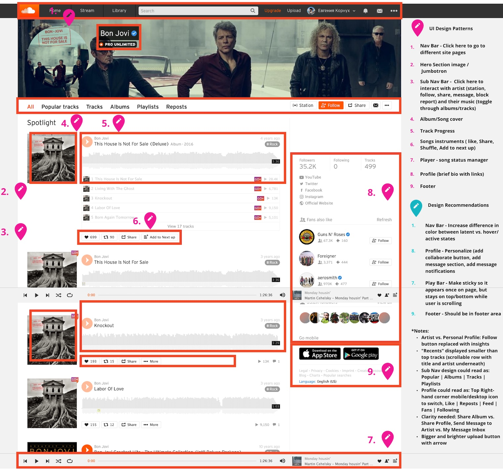

Sound Cloud - UX/UI/FE Website Redesign


Project information
- Category: UX/UI/FE Website Redesign
- Client: UofM Academic Project
- Project date: 10 February, 2021
Problem: SoundCloud’s desktop and mobile apps allow artists to listen and upload music, but are not active in helping artists develop their own brand or collaborate with fellow musicians.
Solution: By redesigning artists’ bio pages to appear more presentable and personable, we are adding an official collaboration CTA and a valuable networking component to the Soundcloud brand.
Tools: Miro | Figma | Adobe Illustrator | Adobe XD | Google Workspace | GitHub | Visual Studio Code
Timeline: 3 weeks - group project
My Responsibilities: Heuristic Evaluation, Redlining, Problem Statement, User Statement, Value Proposition Statement, Competitor Analysis, Flow Chart Lo-Fi - Hi-Fi prototyping and Testing, Navigation and Home Page Coding